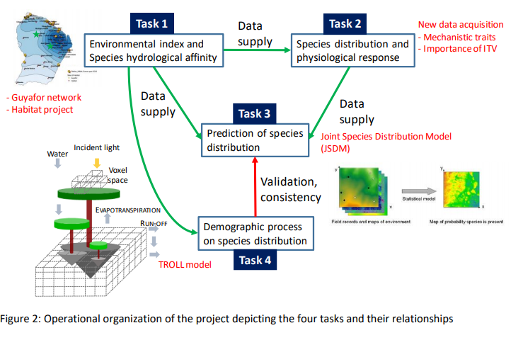

Chapter 2 Project introduction
My thesis is included in the METRADICA strategic project lead by Clement Stahl and Ghislain Vieilledent. Mechanistic traits to predict shifts in tree species abundance and distribution with climate change in the Amazonian forest.
The global objectives of Metradica are to estimate species vulnerability to climate change and predict shifts in species distribution from species traits.
It combines: current species distribution, hydrological indices, climatic predictions, and use a few key traits at the individual level in innovative models (joint species distribution model; JSDMs), in order to better understand the processes by which species interact with their environment.
There are 4 tasks :
- environmental index + species hydrological affinity
- species distribution + functional responses to env’t
- prediction of species distribution from traits using four-corners joint species distribution models
- shifts in species distribution through the lens of demographic process: interaction between models

Metradica project organisation
I am involved in task 2 : to acquire additional traits information in order to have an understanding of the environmental effect on intra- and inter- specific trait variability for morpho-anatomic and mechanistic traits at regional and local scales.